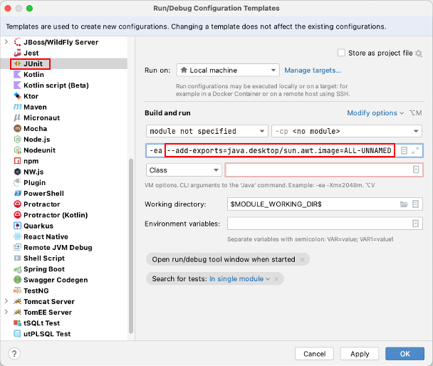
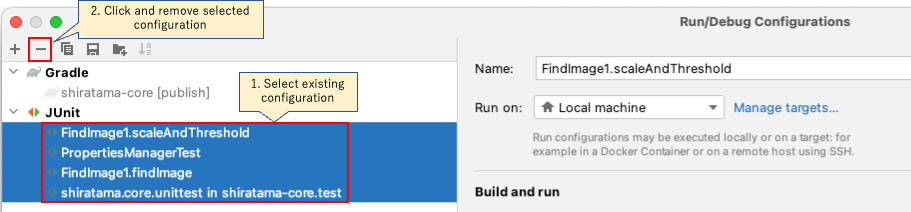

Due to JRE encapsulation, low level data structures needed for fast conversion of BufferedImages are no longer accessible.
Message
Due to JRE encapsulation, low level data structures needed for fast conversion of BufferedImages are no longer accessible. You can work around this by adding the following to your java command: --add-exports=java.desktop/sun.awt.image=ALL-UNNAMED
Cause
Dependent computer vision library BoofCV uses hidden API to improve performance.
See An illegal reflective access operation has occurred #175
Solution
Set --add-exports to JVM args as follows.
IntelliJ (JUnit)
- Run > Edit Configurations > Edit configuration templates
- Select JUnit
- Add
--add-exports=java.desktop/sun.awt.image=ALL-UNNAMEDto JVM args.
 - Remove existing run/debug configuration.

Now you can apply --add-exports option to every JUnit run/debug configuration by default.
Gradle
Add jvmArgs as follows.
build.gradle.kts
tasks.test {
useJUnitPlatform()
jvmArgs = listOf(
"--add-exports", "java.desktop/sun.awt.image=ALL-UNNAMED"
)
}
Note
See also WARNING: An illegal reflective access operation has occurred